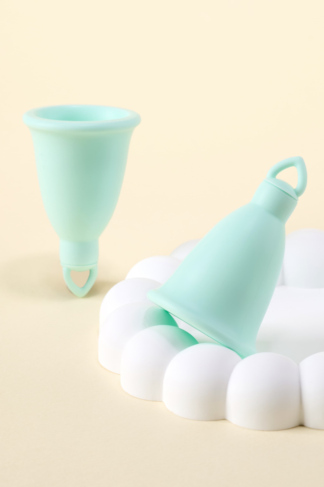

Cozyleaf
A patented FemTech menstrual cup designed for first-time comfort, usability, and real-world fit—built with a product-first approach.
Product • Emotional Framework • Education Systems
I approach complex problems by looking beyond single solutions—connecting systems, behaviors, and contexts to address root causes rather than surface symptoms.
This way of thinking shapes everything I work on—from physical products and education programs to emerging emotional frameworks.
I’m interested in building combined systems that work together, rather than isolated fixes that only address part of the problem.
Worked on
Applying systems-level thinking to real-world problems.
A patented FemTech menstrual cup designed for first-time comfort, usability, and real-world fit—built with a product-first approach.
An emotional framework designed to externalize and observe internal states—applying systems-level thinking to reflection, learning, and self-regulation.
Iterating on learning loops, assessment logic, and clarity of progression within the system.
Signals that these systems are grounded in real constraints, real users, and real execution.
Developed under real-world constraints, prioritizing usability, safety, and first-time user experience.
Assessment, progression, and feedback structured to produce consistent outcomes across levels.
Designed to support reflection and engagement through structured formats rather than isolated content.
Work and experiences that shaped how I approach systems, products, and execution today.
Ran an independent e-commerce business for three years, evolving from dropshipping into near trade-style operations. Focused on niche product sourcing, keyword-driven item scouting, and mixed D2C/B2B supply.
Developed a systems-level understanding of education through curriculum structuring, operations support, and long-term learning outcomes—working closely with an English institute serving over 200 active students.
Independently organized adult English study groups at a young age, managing space rental, instructors, and participant coordination—an early experiment in program-based systems.
Want to collaborate or ask a question? Send a message anytime.